Frictionless Reasoning About a Resistant World
Read the presentation · Slides and speaker notes
This reading edition follows the presentation in slide order, with its illustrations, messages, speaker narrative, transitions, and supporting notes. It is generated from the same source as the slides.
Slide 1 · Frictionless Reasoning About a Resistant World
Equity questions from developing public water-data products with GenAI
Slide 2 · GenAI assistance
GenAI assisted the preparation of this presentation. I am responsible for its claims, decisions, and final wording.
Before we get started, a quick note: I used generative AI—GenAI—to help think through, organize and draft this presentation. I’m responsible for what I share with you today. And that experience is part of the story. What happens when we bring this kind of assistance into work that other people will eventually rely on? That’s the question I’d like us to explore together.
Transition: To introduce that problem, imagine a short guide intended for public use.
Optional image alt-text: Plain text disclosure; no image is needed.
Support and boundaries: Project authorship rules; session 2026-10-28.
Slide 3 · A two-page guide
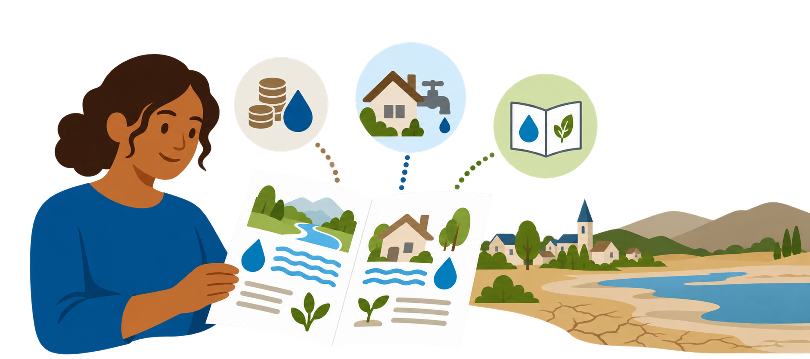
A readable draft still leaves questions about the circumstances its advice assumes.
Imagine we’re putting together a two-page water-conservation guide for communities experiencing water scarcity. We ask a bot for help, and soon we have something that reads pretty well. Two pages, clear headings, sensible-looking advice. But who does that advice imagine its readers to be? Do they own their homes? Can they control their water use? Can they afford the changes? Is it in a language and format they can use? The draft gives us somewhere to start. Those questions give us work to do.
Transition: The guide helps shape a relationship between people and the world. That brings us to mediation.
Support and boundaries: OP-01; author-approved hypothetical illustration.
Slide 4 · Technological mediation
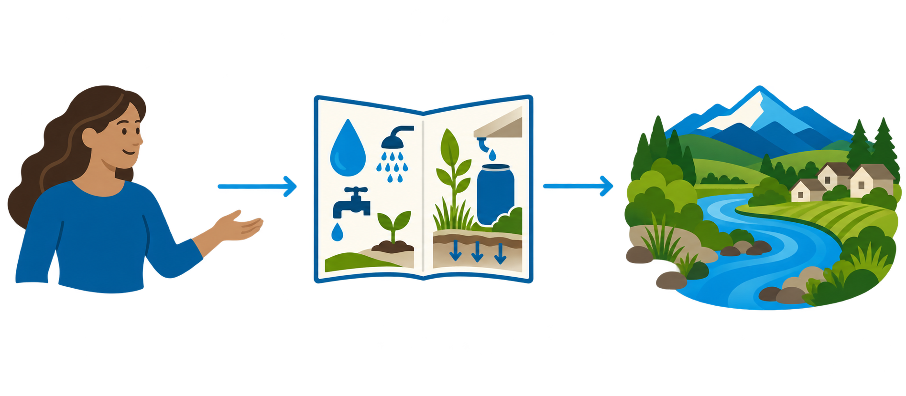
Technologies help shape how we encounter and interpret the world.
That guide sits between people and something they’re trying to understand or act on. It selects what to include, what to emphasize, and how to explain it. This is what I mean by technological mediation: technologies help shape our relationships with the world. We can start with a very simple map—human, technology, world. In this example, the technology is the guide. As we look more closely, we begin to notice the choices inside what first looked like a straightforward connection.
Transition: Even this apparently simple relationship contains layers.
Support and boundaries: ME-01–ME-03; assessed Ihde (1990), pp. 72–76, 85–86, and Verbeek (2001), pp. 126–130. Philosophical framing, exact wording remains under review.
Slide 5 · Onions and the work of scrutiny
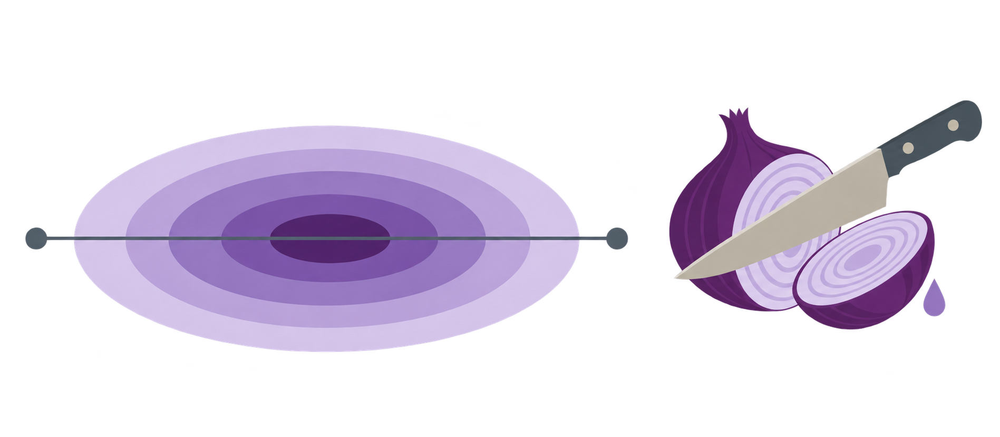
Onions represent layered assumptions and conditions. Chopping represents scrutiny.
This is where I bring in the onions. At the center is the relationship as we first picture it: a person uses a guide. Around it are layers of assumptions and conditions. They’re there whether we look at them or not. Chopping is the work of looking closely. Think of getting onions ready for a salad bar. Somebody has to do the preparation. Not everybody volunteers. And sometimes there are tears. The questions are familiar: who does the work, who gets a say, and whose idea of a better salad are we working toward? For me, the metaphor makes room for effort and discomfort—and for asking how we share that work.
Transition: Now introduce the bot into developing the guide.
Support and boundaries: DR-02; author-defined metaphor and revised shading meaning, session 2026-10-28.
Slide 6 · The bot’s generative branch
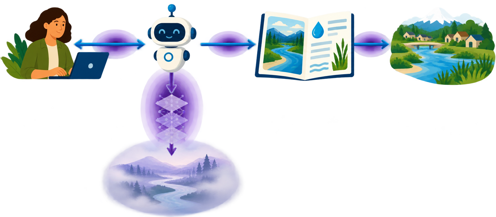
We can question assumptions in a bot’s response without establishing, from the conversation alone, how they arose.
Let’s bring the bot into the picture. I’m working with it to develop the guide: asking questions, providing context, reading responses, making changes. Eventually, other people may use what we create. There’s another branch I want to draw from the bot: the generative process and the world its responses seem to assume. I call that represented world w-prime. Think of it as a question we can ask of an answer: what would have to be true for this advice to make sense? We can examine those assumptions. Establishing how they arose is harder. Asking the bot for an explanation gives us more words to examine; it doesn’t, on its own, establish their origin. Those vertical onions give us a particular challenge.
Transition: That limited visibility matters when the conversation feels easy to carry forward.
Support and boundaries: OP-02, DR-03; Turpin et al. (2023), official NeurIPS abstract: https://papers.neurips.cc/paper_files/paper/2023/hash/ed3fea9033a80fea1376299fa7863f4a-Abstract-Conference.html. Abstract-only check supports caution about explanations, not universal opacity or validation of w-prime.
Slide 7 · Frictionless reasoning
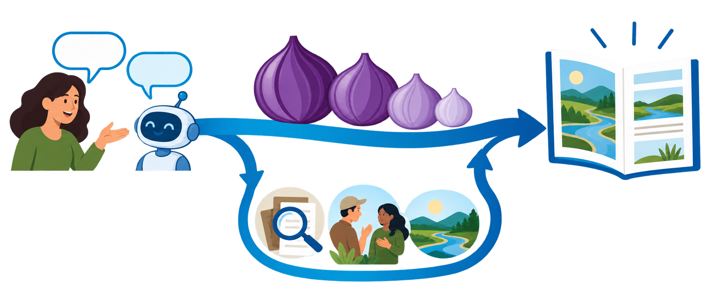
A coherent draft can carry us forward before we examine whether its assumptions fit.
This is the tension behind frictionless reasoning. We have a coherent draft, the conversation is moving, and it’s easy to feel ready for the next step. Meanwhile, questions about affordability, control or access may still be waiting for us. The onions haven’t gone anywhere. We can bring some resistance into the process: check a record, ask someone with relevant experience, invite a different interpretation. Then we have choices about whose knowledge to bring in, what to question, and what to preserve. That unfolding process is what I want to share through my work.
Transition: I will turn now to my work at the Oregon Water Resources Department.
Support and boundaries: ME-09, OP-01–OP-02; author interpretation and hypothetical illustration, not a measured universal user effect.
Slide 8 · My work at OWRD
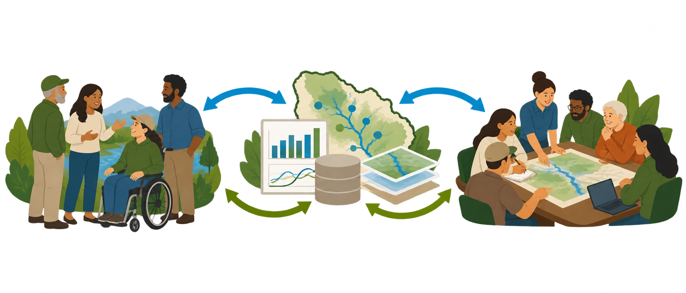
My technical-assistance work connects people and water data for planning.
I work at the Oregon Water Resources Department, OWRD. Part of my job is helping connect people with water data for planning. I think of technical assistance as working on that connection: what can these data help people understand, and what do people need in order to use them? Technical Assistance Packages—TAPs—is the work I’ll use to tell this story. We’re developing packages of analysis instructions, code and draft interpretations to support place-based water planning. There’s an ambitious direction here, and there are very practical questions about how we get there.
Transition: The TAPs direction changes how we are trying to make that assistance available.
Support and boundaries: DR-01, TP-01; author account. Official program wording remains for review; no unverified headcount is asserted.
Slide 9 · Connecting people to data proactively
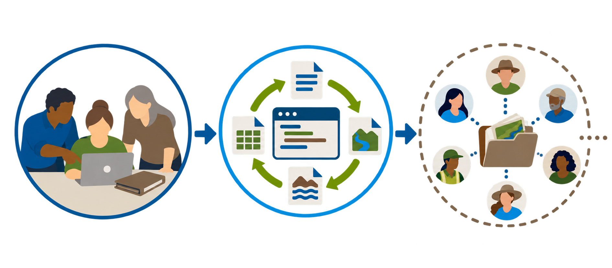
TAPs aims to make technical assistance available through open, reproducible products.
The direction is toward assistance that people can return to, examine and work with: moving from internal workflows toward reproducible work, and toward open, reproducible products. Reproducible means keeping the materials and steps needed to run the work again. As we develop that approach, I keep coming back to some practical questions. Who can we reach? When is the assistance available? Where does the work fall? And how does this change our connection with the people using it? Making something open is a step. Understanding what it takes for someone to use it gives us the next set of questions.
Transition: That ambition involves responsibilities across the product lifecycle.
Support and boundaries: TP-02; author-proposed evolution. Detailed historical comparison and implemented capabilities are not independently checked.
Slide 10 · Can GenAI assist?
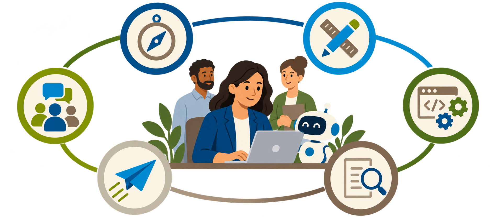
The work spans planning, design, implementation, testing, launch and user engagement.
As project lead, I have a hand in planning, design, implementation, testing, launch and engagement with users. There’s cross-division support, and much of the day-to-day development rests with me. So the question is very practical: can GenAI help us move this work forward with the capacity we have? It can help explore possibilities and put a strategy into words. But then I need to ask: whose working conditions does this strategy assume? Does it fit the people, time and support available here? That’s where the smooth conversation starts meeting the circumstances of the project.
Transition: I will walk through three touchpoints where that examination changed the work.
Support and boundaries: TP-03, DR-04; author-reported responsibilities and capacity constraints; no quantitative staffing claim.
Slide 11 · Three touchpoints in an ongoing process
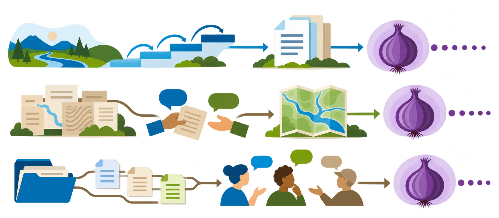
Planning, dataset design and implementation each introduce further equity questions.
I’ll take you through three touchpoints. First, planning: developing a longer-term vision and deciding what needs to happen today. Second, design: learning how to turn water-rights records into the public dataset we have in mind. Third, implementation: organizing the evolving work through a smart folder. In each one, we try an approach to a difficulty, and another set of questions comes into view. Follow the onions as we go.
Transition: Let us start with the longer-term vision—and what it asks of us today.
Support and boundaries: TP-04; author-selected talk sequence; readiness concerns narrative organization, not completed implementation.
Slide 12 · Planning: a longer horizon
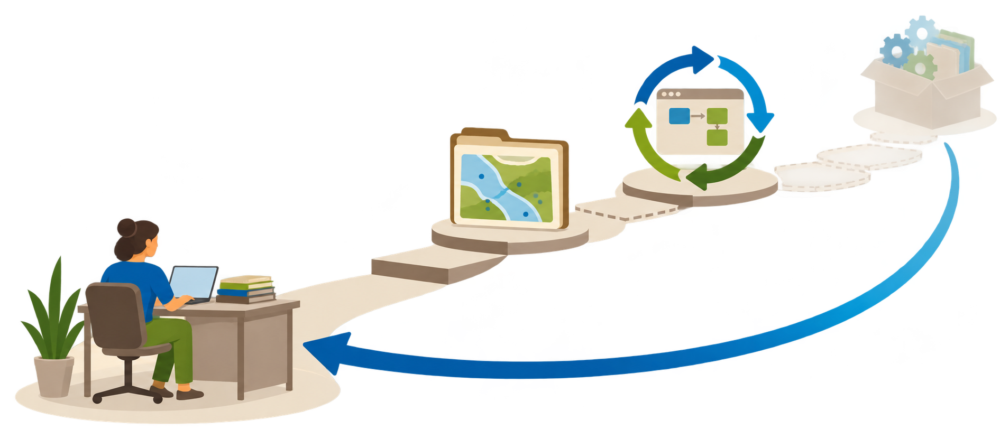
A long-term vision still requires choices about what to do now and whose capacity it assumes.
I wanted a longer-term vision: open data, work that people could run again, and eventually possibilities such as containerization. That means packaging software with its operating environment to help run it in a specified way. Then comes the question that brings a vision back to the desk: what do we need to do today? GenAI helped me explore that. Some plans also assumed data architects, dedicated IT support or established processes beyond my working setup. I kept bringing the conversation back to our circumstances. That was already resistance: asking the plan to meet the setting where we would actually have to carry it out.
Transition: Repeated conversations then raised a different problem: how to follow the reasoning across them.
Support and boundaries: DR-04, TP-05; author-reported planning experience and ambitions; no validated implementation claim.
Slide 13 · Planning: bringing reasoning into a record
A durable record addressed tracing difficulties while creating selection decisions and documentation burden.
As the conversations accumulated, I started losing the thread. Which assumption came from which chat? What had we changed, and why? Sometimes a conversation would reach its limit while we were still working through something. I began moving selected reasoning into a durable record—files we could return to beyond an individual chat. That brought decisions into view: what deserves to stay, where does it go, and how do I explain it? Soon I also had a lot of documentation to look after. I was trying to build products, and keeping the record could become a job of its own. Preserving the reasoning gave me another set of onions to chop.
Transition: The design example shows why preserving a particular change in understanding can matter.
Support and boundaries: DR-05, TP-05; author-reported isolated chats, conversation limits, externalization and burden; no general productivity effect established.
Slide 14 · WRIS: revising our understanding
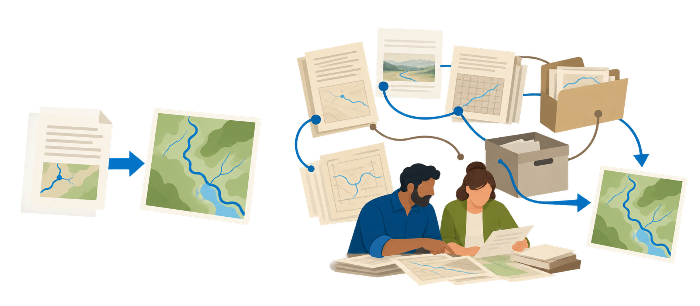
Learning sessions changed what I thought the records could provide directly.
The Water Rights Information System, WRIS, gave me a concrete encounter with changing understanding. I initially expected information we could retrieve more directly. We had metadata listing variables that weren’t readily available through the records in the way I had pictured. Through learning sessions, I came to understand a historical family of connected records that needed careful translation. Imagine answering the latest email in a long thread. The answer depends on an attachment, which sends you to an older file, which points somewhere else. Suddenly, answering that top email takes more context than you expected. Colleagues helped me understand those connections. Some are approaching retirement, which adds urgency to the question of how that knowledge carries forward.
Transition: That learning changed what our specifications needed to explain.
Support and boundaries: WR-01–WR-03; author account, session 2026-10-28. Comparison PNG visually inspected; underlying metadata, technical relationships and specifications not independently checked.
Slide 15 · WRIS: preserving the translation decisions
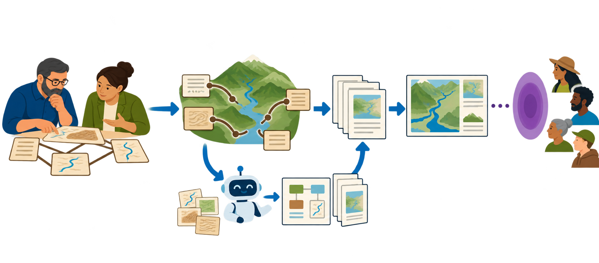
GenAI helped document our evolving understanding and the decisions shaping revised specifications.
Those conversations with colleagues changed how I understood the records. I used GenAI to help follow that change and put it into words we could return to, including the comparison diagram. Our query specifications became more comprehensive and explicit about the steps toward the spatial dataset we want to offer publicly. I also moved toward folders organized around particular products, to keep documentation more focused. Now there’s another opportunity: share some of that developing understanding alongside the data, so people can examine the decisions shaping it. And another question: who gets to challenge that interpretation, and how? That includes our team and, eventually, the communities we hope will use the work.
Transition: How do we give that evolving record somewhere to live, and a way for others to work with it?
Support and boundaries: WR-02–WR-05; author-reported revised specifications, not an inspected artifact comparison or demonstrated improvement in community understanding.
Slide 16 · Implementation: a smart folder
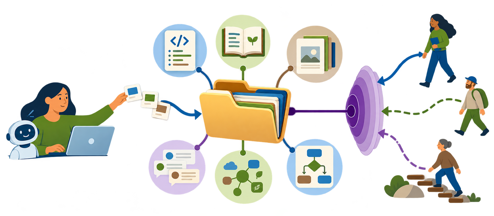
The smart folder connects GenAI assistance with a durable record—and opens questions about access and participation.
The smart folder is one way I’m working on that connection. It’s a project folder with the work itself, instructions, sources, selected discussions, current understanding and decisions, linked together. This presentation project uses that structure. It gives GenAI assistance an interface with a record we can keep working on. Putting that record in a repository opens a possibility: other people could follow how assistance influenced development, and collaborators could keep accounts of their own assisted work. Then I have to ask: who can really get in? Who am I writing for? What skills and time do they need? An available repository gives us somewhere to begin those questions.
Transition: Making it available raises a further question: does participation require AI?
Support and boundaries: DR-06, TP-06; inspectable repository structure plus author-proposed collaborative use; no demonstrated access or accountability benefit.
Slide 17 · AI-assisted, not AI-dependent
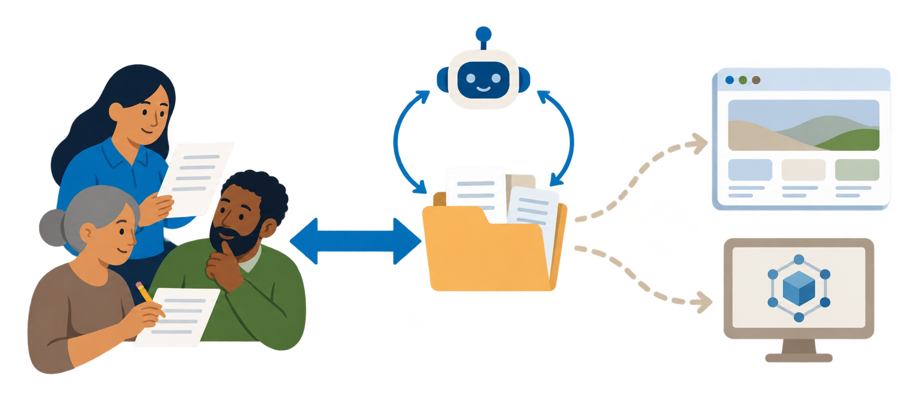
People should be able to read, question and maintain the record without GenAI.
The principle is AI-assisted, not AI-dependent. People should be able to read, question and maintain the record without needing a model. We’re working with ordinary editable files, with instructions alongside them for assisted work. I’d also like that structure to travel across models, and perhaps eventually help us provide project context to a local language model. Another direction is a website that makes the record easier to navigate. Each of those choices asks something of the people using it. What do we expect them to know? What should be easy to find? How would they add a question or challenge an interpretation? The interface is another part of the equity work.
Transition: These approaches bring us back to the work of chopping.
Support and boundaries: TP-06–TP-07; design principle, existing editable files, and explicitly prospective interface/model ambitions. No tested accessibility or model portability claim.
Slide 18 · How many onions are you willing to chop?
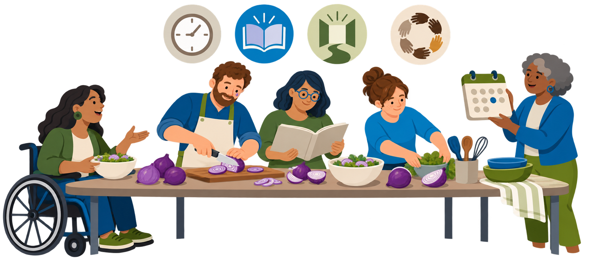
Scrutiny takes work. Who has the time, knowledge, access and authority to participate?
So, how many onions are you willing to chop? And perhaps more importantly: how much time, support and room do you have to do it? Across these examples, we’ve met assumptions about capacity, choices about what to document, changing interpretations of records, and questions about who can access the result. Even asking a team to review a draft leaves another question: can they see how it was generated and how their feedback shaped the next version? Participation can enter all along the way. Sharing that work means making room for people to question how the product is taking shape.
Transition: Our project-level relationships also sit within larger systems.
Support and boundaries: DR-07; author-directed normative questions and scope, not empirical findings about a community.
Slide 19 · Our work within larger systems
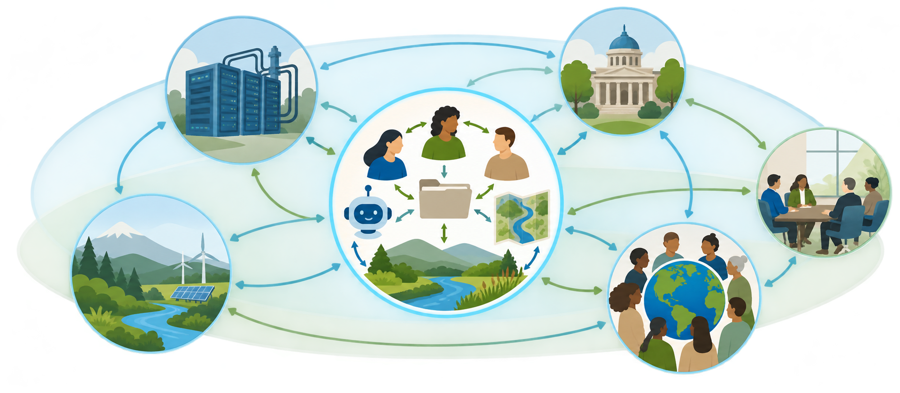
Our project decisions sit within larger systems of power and influence.
Before closing, I want to acknowledge the larger picture. Our work sits within much larger systems of power and influence. People bring concerns about AI infrastructure, companies, public institutions and environmental consequences into these conversations. Those concerns deserve space. Today I’ve stayed close to decisions I encounter while developing a public-facing product. I’d like us to hold those scales together: keep the wider concerns in view while asking where we can act, question and change practice within our own organizations. For our discussion, how might those broader concerns connect to the choices we’ve been walking through?
Transition: Let me bring that back to the work we can keep doing together.
Support and boundaries: TP-08; author-proposed discussion framing. No quotations, factual assertions or identifying material from private event notes are reproduced.
Slide 20 · Conclusion: keeping equity questions open
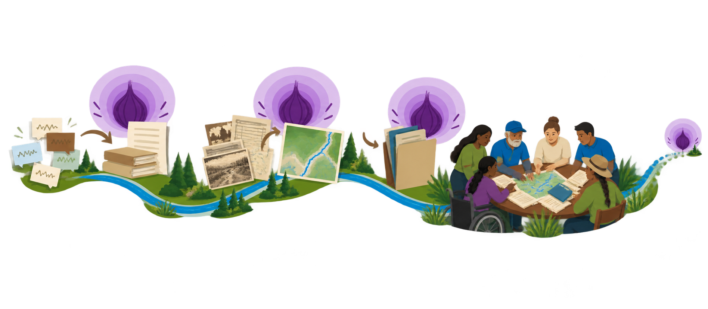
Each approach opens further equity questions. Productive resistance keeps them visible and open to participation as the work evolves.
What I hope this story leaves with you is a sense of the work continuing. I tried to preserve reasoning, and found questions about selection and burden. We documented a changing interpretation, and met questions about who could challenge it. We organized a repository, and opened questions about access and skills. Much of this has been a solo effort, and I want to find ways to bring others further into it. Productive resistance means keeping opportunities to question, learn and reconsider alive as we go. What makes that resistance productive is something we need to work out together, in the circumstances of each project. There will be more onions. The question is how we make room to chop them together.
Transition: Thank you. I look forward to continuing these questions in the shared Q&A at the end of the presentation cycle.
Support and boundaries: DR-08; author-directed conclusion checkpoint. Ready concerns the agreed framing, not empirical proof or completed participation.